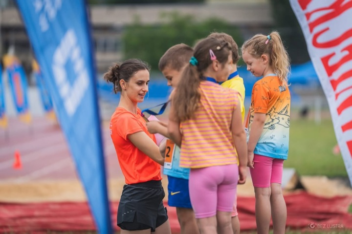

{{POST_TITLE}}
Każdy, kto podejmuje wyzwania, jest najlepszą wersją siebie! Takie były dzieci biorące udział w Krakowskiej Rodzinnej Olimpiadzie Sportowej. Dla niektórych był to pierwszy bieg na pełnowymiarowej bieżni lekkoatletycznej. Biegali, skakali, rzucali… a z niektórymi na stadion przyszli nawet rodzice.

Wasze dzieci będą robić to, co Wy! Pokazujcie im sport od małego. Nie tylko zwycięstwo, ale rywalizację, współpracę, upadki i dobrą zabawę.
Dziękujemy za piękną imprezę AZS AKF Kraków Masters i Kubie (foto BEZ LUSTRA) za niepowtarzalne ujęcia.